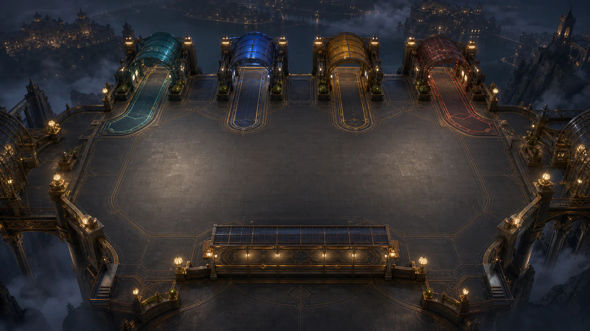

At first, Panko's Bus Jam looks like a colour-matching game. After a few turns, it becomes a game about order.

Only the front bus can take passengers. A wrong colour waits in the holding lane, and that lane has limited space. Send the wrong passenger at the wrong moment and the terminal can quietly close itself off.
We wanted more than matching
The goal was not to make a game where players simply find two colours that belong together. The important question is: “If I make this move now, what will it do to the next move?”
That small change turns a visual puzzle into a timing problem. The mistake does not always end the round immediately. Instead, the holding lane fills a little more, and the player has to notice the danger before it becomes a dead end.
Undo helps players think
Undo is part of the design for a reason. Without it, players tend to make only the moves they are already certain about. With it, they can test an idea, see how the board changes, and learn from a wrong turn without starting over every time.
Undo does not solve the puzzle. It simply makes mistakes useful. A good puzzle does not need to let players win every time, but it should help them understand what to change next. ⚠️
Simple does not mean static
The game has 30 terminals. Later stages do not only add more passengers; they change the number of colours, queues, buses, seats, and holding spaces. The player has to look further ahead instead of repeating the same action for longer.
That distinction matters. If a new level is only the old level with more pieces, it feels longer. If it changes the decision, it feels new.
The lesson we kept
Art, animation, and Panko give the game its personality, but they cannot replace clear information. Players still need to see which bus is active, how much room remains, and why a route is blocked.
That is why we test the game on a phone as well as a desktop: the real play area must stay readable, the controls must remain reachable, and a failure must explain itself.
A game can have only a few colours, queues, and buses and still create meaningful thought. “Simple” is difficult because every small detail has to serve the player's next decision. 🚌
This article was outlined with AI assistance and then checked and edited against the actual WeightPlay project by the WeightStudio team.